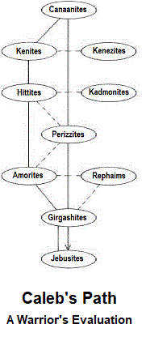

Caleb's Report
Crossing into Canaan at the place called Malkuth, I saw a land whose rulers know not how to govern for good. The air is shrill, with uproars coming from every quarter; and its people could not be satisfied living under such conditions, even if they imagine themselves content.
 understand reality. We are therefore obligated to aid in the rebuilding of what we tear down, if HaShem permits. When the Father turns their hearts in the context of our advance among them, we must be ready to pointOur ministry must destroy the parameters by which these nations perceive and out cognition that we take for granted. As they become converted to our way of wrestling with divine realities, the Canaanites will be as newborns whose eyes can't maintain focus, because there's so much new to perceive and collate, in contradistinction to their former states of being. Patience will bring healing.
We, however, are a united people who have received the rules and understanding of Order, as given by Moshe at the hand of HaShem. Our government is not arbitrarily imposed by the whims of tyrants, but arises spontaneously from within our hearts through the organizational stability of the Holy Spirit.
To the contrary, the underlying principles of the nations of Canaan were never capable of building an enduring house. Life is more than existence. Its subtleties are endless, as you well know. And because we know these things, it behooves us to share this spiritual wealth with all we encounter, here below; for the enlightenment of those who know no inward light makes us richer day by wonderful day. All who labor hope for a harvest. We labor for the harvest of planet Earth, tending its soul fields. As we enter this land, we must be more than conquerors. We must be bearers of the Light that shines from our faces because of faith. To the degree we are mindful of that, all will be well.
If we patiently teach its inhabitants of the great transformations the gift of Torah can bring in their lives, the less violent among them will see the reason for our hope in HaShem. We are all brothers, after all; and though they may not know the Presence we serve, that Presence is within them.
Our role, then, is not to compel them to accept our values and operational principles. Those matters will take care of themselves, if we do our job; for the Spirit of HaShem is already with them as Immanual. God is King upon the mountains and in the valleys, and our role is to awaken them to the Presence of HaShem in their hearts and minds, that they might add life to mere existence. Their awakening will enrich both they, themselves, and us, their brothers.
We need not descend upon them as a great whirlwind, disrupting their routines by venting our zeal for God's love in hopes of a conflagration that will put all this over and past, for us. A gentle breeze will fan the flame of Immanual in them, and they will come to know the steady light of the inward menorah we call Jacob's Ladder.
That some will awaken sooner than most will stir serious divisions among the householders of this soul field. As their society becomes even more unstable than it now is, by reason of those divisions, its structures will begin to crumble and disintegrate. We must conduct ourselves as faithful witnesses for the immovable structure in which we abide. When the basis of our faith begins to open itself to their perceptions, some will seek to enter into covenant with HaShem. As early converts find welcome and reward among us, others will surely follow.
Do not offer or accept bargains of any kind in your exchanges with the people. Be true to who you are; for we have one law, whether for family and friends or for strangers. It's God that puts any difference between us: not them, nor can it be us.
Working out our differences as brothers will enrich us all. They presently live their lives in a series of quid pro quo exchanges and are so busy looking for leverage as they bargain. They cannot comprehend the fact that, in the long run, a life of sharing enriches us all. Understand. Their rulers have been tyrants from ancient times; and under the hammer of such governance, abuse of one another has become accepted as the norm throughout their land.
This is especially true in the city of Yesod, which lies directly beyond Malkuth. The area is turf of the Girgashites, and they will swarm you in hopes of wringing your human value right out of you. Be resilient by being still: by remaining in the rest that comes as each of us measures the Presence within our hearts and minds during confrontations. The battle is HaShem's, and we are the points of his sword, the curve of his buckler. They've no chance if we serve HaShem hwhy as love requires. If the enemy's defeat brings him victory, the wars will come to its end.
As days go by, the Cananni will be weaned from their destructive habits and understandings by the strong food available in the intricacies of the letter of our Torah. When their appetites grow, its letter in them will begin to kill those qualities that are appointed for death and to open the spigots of the Water of Life, which is the Spirit of HaShem. Use the milk and honey of the Law to wean them from addiction to their poisonous diets. Feeding them the spiritual interpretations for life that Moshe teaches us, you will soon see divisions developing between the dead and the near-dead among them. Those divisions must increase, so that those appointed for life may triumph; but you you are to cast seed for increase of life, not stones for the destruction of those things contrary to life. That's God's business, not yours.
Our goal in the service of the Salvation of Yah must be to lift up a higher authority than tyranny can produce. The King shouting quietly from our breasts is the only opposition we will offer their temporal rulers. The self-serving kings of Canaan will be toppled most effectively by our quiet confidence in the spiritual King. If we lift up true witness of our faith, all shall be drawn to it, like moths to a flame.
If your work among them seems fruitless, persevere. We have entered into God's work, and the pace of change is in his hands. As time passes and opposition falls before us, day by day, we will then be able to supplant domineering principles and debilitating customs by openly teaching the lofty truths of Yahuwah. If their world is overturned not by an invasive force, but by friendly exchanges in ordinary matters, the peoples' minds will have been loosened not only from enslavement by tyrants, but also from obsession with tyranny, itself. By such liberation, we will fulfill our vows to HaShem and cannot help but come to victory and to richer lives, both for ourselves and for them.
When the present, near-absolute grip of the Canaanite leaders upon the minds of the people begins to fail, therefore, we shall begin to make progress in the service of Life; but as we are seen to succeed, we will not suffer ourselves to be seated upon the very same thrones our la is casting down. We will confess to the them the inward throne that mukst be filled with knowledge of HaShem's Presence, inviting them to call upon the Name, that HaShem is recognized as their King, also. Our Father is mighty and just, and his mercy to those who seek his faces is unfailing.
The first of the places you will encounter beyond Malkuth is the city of Yesod, which seems to be organized into three camps—not rigidly, as there is plenty of fkurtive movement back and forth, although constrained by restrictions born of fear. The rulers are tyrants, but they keep pretty much to themselves, enforcing their rule primarily by the fearful images of them selves that they have set up in the minds of their people.
The most prevalent influences in the city, amidst its confusion, come from families of the Perizzites, the Amorites, and from the Rephaims, of whom I saw but little; but chieftains among Yesod’s families are the Perizzites, an unctuous people. We shall have but little suc cess among these, as they have an inordinately high opinion of themselves. They are the ones you shall find wagging their tongues, like tails, all over the place. If you involve yourselves much with them, initially, you will waste valuable time.
The Perizzites will impose themselves at every opportunity between you and others with whom you will be sharing, insisting upon their right to assert their views of matters of which they have yet even to hear. Don't let them distract you, drawing your strength from more productive labors. They are essentially follow ers. Do not be drawn into their arguments, there fore. As you have success among others of Canaan, the Perizzites who HaShem calls to join us will be sure to follow. They would never get over being left out.
As a maatter of numbers, I encountered more Amorites visiting in Yesod than any of other tribes. I may have confused a few Rephaims among the Amorites, as the two tribes are difficult to distinguish from each other. A chance phrase, overheard, led to my assumption that there are more of Amori in Yesod than might at first appear. I understand that Joshua stayed in their capital city; so I’ll leave the greater part of that to him and tell you what I know about them, as my journey from Yesod took me through their borders. The Canaanites are all so much alike, really; but you know how it is: every bird has his color.
Speaking of birds, the Amorites are, to all appearances, the most flighty creatures imaginable in human form. It’s hard to get one to stand still long enough to talk at length. And substantive matters? Good luck! The Amorites dart here and there, dropping a few words and moving on to some other focus—only to circle back again when they’re least expected. I think of them as humming birds.
The great weakness of the Amorites—and this flaw is pervasive among all the Canaanites I encountered—is their pride. Be careful not to insult their pride. It has to go, I know; but do not confront it: undermine it by the way you conduct yourselves. Your example, as you walk in the precepts of Torah Light, will make the Amorites covetous of your very carriage.
Amorites seem less self-centered than Perizzites, but the difference is qualitative, not categorical. Perizzites are emphatically proud, while their Amorite cousins are only incidentally proud; and they are much more sociable. However, as Amorite pride is motivationally underlying and not so easily discernible as in the Perizzites, the Amorites are easier to offend by careless, off-hand remarks—such as the comparison of them with birds, for example.
Be careful not to offend. The Amorites want everybody’s eyes to be on them; and when people start watching you instead of them, they will immitate your walk in Torah if you have not offended them. If you offend them, however, they will hate you; and they are dangerous enemies.
As they turn to follow after you, furthermore, be faithful to turn their turnings unto HaShem, giving Him the glory; for it is truly his glory in you that shall attract them. Should you allow them to attach themselves to your persons, they will devour you when the nakedness of your weaknesses shall be revealed; and they will be, if you allow yourselves to be set up as idol shepherds. Be selfless.
As I was talking to a group of Amorites . . . Oh, by the way, they are able to converse effectively in groups, the threads of thought being woven together among them, apparently relieving inidividuals of the burden new ideas . . . While I was talking with a small gathering of Amori, a stern party of Hittites came over to see what was going on. Make no mistake about these: the Hittites are the enforcers for the powers-that-be!
The newcomers immediately recognized me as a stranger; and they broke up the discussion, telling the Amorites to go on about their business while ordering me to remain where I was. One of them physically restrained me while another went through my few belongings. I didn’t get upset. I didn’t resist. I asked the man holding me in custody if he often saw many strangers, and if he got a lot of trouble from them. He seemed rather surprised that I should ask.
When nothing incriminating was found in my stuff, the others murmured among themselves; and it looked as though they were going to give me a good going over to see what they could find out. The fellow holding my arm intervened, inconspicuously, by suggesting that they should take me to the Kenites, who knew better how to handle the likes of such as me. The rest, with dark humor that promised no good fortune for me, agreed; and off we presently went.
The Hittites do what their bosses have trained them to do; and because they have obeyed tyrannical bosses, we have reason to believe that they will also come to respond, in the overthrow, to precepts of United Order—if only from their habit of compliance with disorder. Their obedience is triggered and sustained by fear that they will lose their traditional identity as enforcers of authority, should they act on their own; and this fear will work to our advantage.
A man once said, “Sometimes it is necessary to go a long way out of your way, in order to be able to come back a short distance correctly.” This is sometimes true, and such roundabout progress will lead to the ultimate realization that Yahuwah is the only sovereign worthy of allegiance, as shall be proclaimed by the true and faithful witness of whom Moshe teaches. We cannot expect proper motivation, at first—little by little, saith HaShem. The Hittites will learn our motivations as they walk in our steps.
Just before they sped me away to face the dreaded Kenites, the Hittite band had one last argument among themselves about whether they should rough me up a bit, or not, to make it look good. Consequently, I had a little time to look around.
I saw a few Perizzites peeping around corners to see what was happening to me. They do seem to think a lot, despite their proud exterior. If we could remove that covering of pride without utterly ruining them, we might discover, inside, the raw materials necessary for building compassion.
I’m pretty sure there was a furtive Rephaim of some prominence among one such group. At any rate, the Perizzites held the man in high regard; and that’s it! If they can honor another—in whatever sense and for whatever reason—they might also come to honor one of us! Then, honoring us, they can be taught that what they admire in us is not us, but the King we serve. If they can be led into this perception, even grudgingly, they can be won!
I also saw, during this lull in the action, an open building in which many different things were going on at once—so much, in fact, that I couldn’t make much of it. I asked the Hittite holding me what was happening over there. He just shrugged and answered, “Oh, you know . . . the Kadmonites!” I still don’t know much about these people, but I understand Joshua learned a great deal. He’ll fill you in.
I was truly worried when I was finally brought before the Kenites. These people are shrewd. Be plain with them: clever people have one great weakness—simplicity goes right over their heads! But here’s the trick: after it has gone over their heads, it comes back around and gets all twisted up with their every-day thoughts. We can win these sons of Canaan by the action of leaven.
The main difficulty in winning the Kenites will be that they seldom, if ever, act on their own initiatives. They are in constant communication with a group called the Kenizzites, sending messages rapidly back and forth in conspicuous secrecy.
I never did get a chance to talk with a native Kenizzite, but I understand that they differ substantially from Jephunneh, whose mouth is ever filled with praise of hy. Take what I say about the kindred tribe of Kenites and what Joshua says about the Kenizzites, and the mystery of their relationship will, doubtless, prove to be nothing.
I do know that both families defer to the Canaanites, by reason of that tribe’s patriarchal position among the nations; for when the Kenites were satisfied I was an innocuous wayfarer and could be released, they sent a last note to the Kenizzites, who evidently thought it prudent to take me before the Canaanite chieftain, to be safe from the aftermath of dealing with me. In Canaan, responsibility is a thing better passed around than shouldered.
I figured this was the test! I steadied myself, that I might meet my fate without sullying my witness. But you know what? As soon as I was ushered into the Canaanite throne room, the Big Boss got up and said merely, “Follow me.”
I can say, “merely,” now! But at the time it happened, I had no idea what horror was waiting! The Canaanite chieftain didn’t even bother to make further inquiry. He led me straight back to Malkuth without displaying further interest in me or concerning my intentions in their lands.
When we got to Malkuth, he said, “You can stay on this side if you want, but your kind gets along better over there.”
So here I am: whole; learning what I’ve learned; thinking what I think. I guess it’s Joshua’s turn. He'll answer your questions.
|
site |
Joshua's Report |
book |